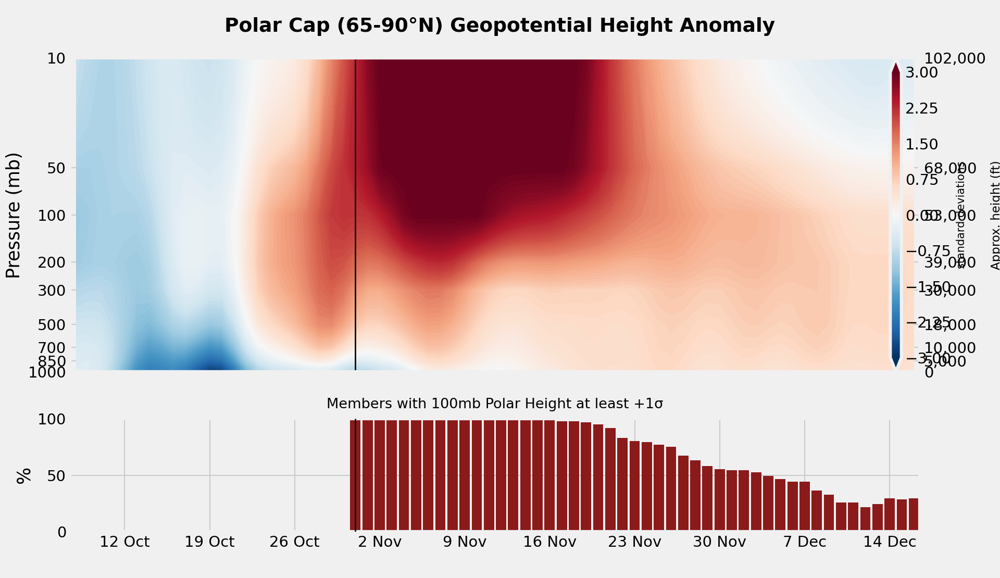

Weather Programmer / polar vortex
Polar Vortex Diagnostics
Standardized geopotential-height anomaly over the polar cap (65-90°N), from the surface to 10 mb. Red is a high polar cap (weak vortex). The bars are the share of extended-range members that forecast downwelling into the lower stratosphere.
Loading latest init…
Polar Vortex
Loading tropospheric coupling probability…

Wave Reflection
Loading reflection event probability…


How to read these charts
A sudden stratospheric warming shows up here as a deep red column in the upper stratosphere. Whether it matters for surface weather depends on whether that anomaly descends.
The top panel is the ensemble-mean standardized anomaly. The bottom panel is the member-by-member probability of clearing that +1σ threshold at 100 mb. High bars with little red below ~300 mb mean the ensemble still has a high polar cap aloft that has not yet coupled strongly into the troposphere.
ECMWF Extended anomalies are drift-corrected using about 100 IFS control reforecasts (5 nearby model dates × 20 hindcast years). GEFS Extended is shown without drift correction for now.
Upward arrows at 100 mb mark days when the 45-75°N eddy heat flux (a proxy for upward wave activity into the stratosphere) exceeds its day-of-year 90th percentile.
Tropospheric coupling probability is the share of members with at least one day when polar-cap height is at least +1σ at 50, 100, 200, 300, and 500 mb together, excluding days with those upward arrows. That flags a weak-vortex column that reaches the troposphere without counting active upward-wave forcing.
The reflection index (Messori et al. 2022, after Matthias and Kretschmer 2020) compares how unusually strong the northward wave-driven heat flux is at 100 mb over Siberia (45–75°N, 140–200°E) versus Canada (45–75°N, 230–280°E). Positive values mean Siberia is anomalously strong relative to Canada. A reflection event is defined as RI > 1 for at least 10 consecutive days; those events typically favor ridging over Alaska or western North America and cold-air potential in the Mid-Continent.
ERA5 can lag the open forecast archives by a day or two. Missing analysis days are bridged with that day’s lead-0 ensemble mean.